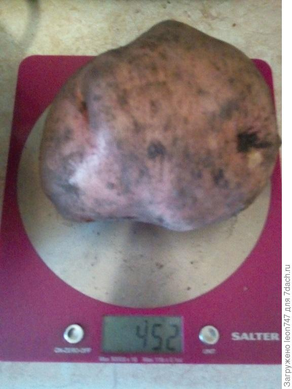

Когда и как правильно копать картошку? Сроки, инструмент, советы. Фото — Ботаничка.ru
 Закрыть Войти Активность Сад и огород Цветник и ландшафт Комнатные растения Продукты и рецепты Животные Алфавитный рубрикатор Блоги компаний Календари Форумы Просмотр тем Все новые темы списком Самые популярные темы Темы без ответов Форум о саде и огороде Форум о цветах и декоративных растениях Форум о комнатных растениях Опознаем растения Форум о грибах Хозяйство на даче и в деревне Строительство и благоустройство Продукты и рецепты Разговоры на все темы Объявления Помощь, правила и предложения Войти Регистрация Активность Войти Регистрация — вход с помощью социальных сетей — Восстановите свой пароль Сад и огород Цветник и ландшафт Комнатные растения Продукты и рецепты Животные О мире растений и загородной жизни Главная Блоги компаний Календари Алфавит Форумы Просмотр тем Все новые темы списком Темы без ответов Самые популярные темы Форум о саде и огороде Форум о цветах и декоративных растениях Форум о комнатных растениях Опознаем растения Форум о грибах Хозяйство на даче и в деревне Строительство и благоустройство Продукты и рецепты Разговоры на все темы Объявления Помощь, правила и предложения Домой Сад и огородКогда и как правильно копать картошку?
Николай Хромов - 28 августа 2017 13 0 25545Производить сбор урожая овощей, плодов, фруктов, ягод довольно просто. Мы видим, типична ли окраска собираемого, скажем, фрукта, можем сорвать его (ведь на дереве еще много таких же, и мы ничем растению не повредим) и отведать, выяснив на вкус – готов ли. С корнеплодами, а в частности, с картофелем все обстоит иначе: чтобы верно выкопать картофель и чтобы в итоге клубни оказались вызревшими, вкусными, крупными и, главное, сохранились как можно дольше, вплоть до нового урожая, нужно знать ряд тонкостей и особенностей этой культуры. Попробуем разобраться как, когда и чем лучше копать картофель.
Выкопка картофеля. © SaraСодержание:
Когда копать картофель? Нужно ли удалять ботву при уборке урожая картофеля? Копаем картофель Сушка и хранение картофеляКогда копать картофель?
Каждый огородник должен твердо понимать, что на процесс окончательного созревания, в том числе и клубней картофеля, воздействует огромное количество разных факторов. Это и особенности текущего сезона, и состояние почвы, и степень заражения вредителями и болезнями и, наконец, сортовые особенности, которые также диктуют свои правила.
Например, если вы посадили картофель на майские праздники (или в конце апреля, если почва хорошо прогрелась и была готова к работе с нею), то выкапывать картофель можно примерно в середине августа, вплоть до его конца и начала сентября. Это обычный срок созревания подавляющего большинства самых разных сортов картофеля.
Естественно, не забудьте, а лучше еще при высадке клубней картофеля в почву весной запишите, сорта какого срока созревания вы высаживаете: ранние, средние или поздние, ведь от этого тоже будет зависеть период начала уборки вашего урожая. Не думайте, что разница может быть небольшой. Так, если указано, что сорт картофеля ранний, то выкапывать его можно начинать на целый месяц раньше сорта среднеспелого и на полтора месяца раньше сорта позднего.
Помимо этого, окиньте взором ваш участок: если хозяин вы добросовестный и вовремя пропалывали сорняки, то возможно ваш картофель получал максимальное количество питательных веществ из почвы, минуя отсутствующих конкурентов, и его хотя бы на пару недель можно выкопать пораньше. А если сорняков столько, что и ботвы картофельной не видно, то возможно ваш картофель голодал и ему нужно еще немного времени, чтобы окончательно «дозреть».
Как проверить?
Конечно, всегда можно не гадать, а проверить, не пора ли выкапывать картофель, для чего выбрать кустик попроще да поближе к краю и выкопать его целиком, осмотреть клубни, кожуру на них. Если клубни легко отделяются, а кожура на них плотная, то вполне можно приступать и к выкапыванию всего картофеля.
Важно ! Это касается новичков, впервые и самостоятельно стремящихся вырастить картофель на своем участке. Нередко по неопытности и незнанию они начинают выкапывать картофель прямо в разгар лета. Урожай получают хороший, однако клубни такие имеют тонкую кожуру, они быстро варятся, то есть готовы для немедленного приготовления, но вот долго храниться они не будут.
Взглянем на ботву
Если кусты копать не хотите, то окиньте взором ботву картофеля: не пожелтела ли она, не полегла ли. Если это происходит в конце августа, то сама картошка тебе подсказывает, что пора ее из почвы доставать, а то, неровен час, стукнут морозы и картофель станет сладким.
Бывает так, что часть ботвы картофеля полегла и время на дворе сответствующее, а часть ее стоит зелена-зеленёхонька, словно не конец августа сейчас, а июнь какой-нибудь. Почему так происходит? Это бывает у огородников, которым было лень отсортировать сорта ранние от средних и поздних и высадить их на разных делянках.
В данном случае нужно выкапывать ту часть картофеля, ботва которой полегла и начала засыхать, а молоденькую ботву постараться не трогать, конечно, если выкопка идет вилами или лопатой. С мотоблоком все сложнее: объезжать эти припозднившиеся кусты не стоит, придется жертвовать ими и будет это вам уроком на будущее.
Фитофтора, которая совсем не вовремя
Кстати, к моменту уборки картошки можно видеть и такую картину: часть кустов уже полегло, ботва на них явно мертвая, а часть «догрызает» фитофтора. Замечено, что у таких кустов могут быть и клубни поражены этой опасной грибной инфекцией. И представьте, что будет, если выкопать такие кусты и поместить пораженные клубни картофеля на хранение вместе со здоровыми? Верно, ничего хорошего: может погибнуть весь или большая часть урожая.
Поэтому такие кусты картошки советую копать в самую первую очередь, а клубни, изъятые из почвы, либо уничтожать, либо пускать на корм скоту, кушать я бы их не советовал.
Выкопка куста картофеля. © Arthur McWerterНужно ли удалять ботву при уборке урожая картофеля?
Споры об удалении ботвы перед уборкой урожая картошки не утихают до сих пор. Лично я для себя твердо решил, что все хорошо в меру: полное удаление ботвы (на уровень почвы) элементарно затруднит затем выкопку картофеля вам придется искать то место, где был куст.
Вторая проблема все та же фитофтора: когда скосите всю картофельную ботву целиком, растащите заразу по всему участку, а когда будете выкапывать клубни, еще и заделаете грибок в почву – что заразе и нужно. В принципе, ботва может быть и вредна, но в хозяйствах, где картофель убирают машины, жесткая ботва может банально повредить клубни.
Дома я советую делать так: первым делом убираем и уничтожаем все живые, но доедаемые фитофторой растения. Ни клубни, ни ботва таких растений не нужны. Далее скашиваем всю ботву на высоту 12-15 см, не ниже. Так вы и кусты увидите и дадите толчок клубням: дескать, им скоро из почвы нужно убираться, а значит, следует запасаться прочной «коркой». Спустя неделю можно приступать к уборке картофеля. Кстати, здоровая ботва, лишенная фитофторы это хороший компост.
Копаем картофель
Для начала выбираем подходящий денёк. Прекрасно, если жарко и ветрено, если пару дней до этого не было дождя и еще столько же синоптики его не обещают. Далее проводим контрольную выкопку: кожура картофеля твердая, клубни легко отделяются значит все готово.
Шаг третий оцениваем вероятное количество урожая, чтобы знать сколько нужно людей, мешков, тачек, закромов или ящиков для хранения и прочего инвентаря. Как узнать? Простой способ: выкапываем пять кустов картофеля, выбираем из каждого все до единого клубня, делим на пять, получаем средний урожай с куста, довольно точный.
Далее умножаем его на количество кустов на участке; снова имеем пусть и приблизительный, но близкий к реальному урожай с участка. Если чего-то не хватает для транспортировки или хранения этого овоща, то срочно докупаем. Помните: чем быстрее вы выкопаете картофель, пока стоит хорошая погода, просушите его и отправите в хранилище, тем лучше.
Выходя на уборку картофеля, советую взять с собой четыре партии мешков, вилы (если почва тяжелая для копки) и лопату (если ей копать вам будет легко). Можно взять и мотоблок, но о нем мы расскажем потом. Он не у всех есть и не все умеют им управлять, но прогресс неумолим и упускать этот момент уборки нельзя.
Зачем столько партий мешков? Все просто, советую сразу после выкопки картофеля разделить ее на четыре партии. Первая партия это будут клубни-гиганты, самые крупные, которые или скушать можно, или оставить на семена. Во второй мешок кладем клубни картофеля нормальных размеров, граммов до 80-90, в третий – клубни, которые еще меньше (40-50 г, не более), и наконец, в четвертый всю мелочь, обрезанные, проткнутые вилами, поврежденные клубни, которые пойдут или на еду сразу, или на корм скоту.
Выкопка урожая картофеля. © Christina RicchiutiИнструмент для выкапывания картофеля
Лопата. Это надежный инструмент, однако желательно иметь их несколько штук, так как в процессе бывают ломаются ручки. Цельнометаллическую лопату я бы брать не советовал, лучше взять ту, где имеются щели в корпусе, в них будет просыпаться почва и копать будет легче.
Недостатки лопаты в том, что она нередко портит клубни картофеля – режет, оставляет порезы, но выбор за вами, который зависит и от почвы (лично я в глине копаться лопатой смог бы не более пары часов).
Вилы. Вил тоже желательно иметь пару. Вилы берите с четырьмя или пятью зубьями, не более, так легче снизить риск повреждения клубней картофеля до минимума. С вилами будьте внимательнее, особенно когда вонзаете их в почву, можно легко проткнуть резиновый сапог, так что тут я бы советовал обуть кирзовые сапоги, они будут попрочнее. В принципе, выкопка вилами от выкопки лопатой ничем, собственно, и не отличается (хотя лично для меня выкапывать вилами легче, но это кому как).
При копке картошки стоять нужно так, чтобы солнце смотрело в спину, так вы видите, что и где копаете. Одевайтесь обязательно основательно, чтобы все части тела были закрыты от солнца, на голове была панама с полями, а на поверхности одежды стойкий аромат спрея от комаров и слепней. Что касается обуви, то идеальный вариант это сапоги (может в них и тяжело, но повредить ногу, случайно, будет весьма сложно). За вами должно идти несколько человек, отставая на пару лунок не больше и в перчатках, они должны выбирать картофель и сортировать его по мешкам.
Культиватор. Это уже из области современной техники, рассчитан он на тех, у кого имеются свободные средства и способности управлять такой техникой. Культиватор, на мой взгляд, актуален, если картофелем засажено не менее гектара земли. Меньший участок можно потихоньку выкопать втроем. При работе с культиватором желательно удалить всю картофельную ботву, не оставляя на участке ничего. Но первым делом выкопать вилами или лопатой кусты, зараженные фитофторой, а заодно и клубни с нею. Далее нужно выждать несколько дней, чтобы трава улеглась и не мешала работе.
По погоде все то же самое тепло и сухо в течение пары дней. По выбору картофеля: тут, скорее, придется все делать всем вместе и в конце каждого ряда, который пройдет культиватор или вообще после уборки всего участка.
Для того чтобы работа с мотокультиватором при выкопке картофеля была удовольствием, а не оказалась мукой, необходимо чтобы все рядки были ровными и культиватору не приходилось «гулять» в разные стороны. Далее, расстояние между рядками также желательно, чтобы было одинаковым. Естественно, при выкопке картофеля для культиватора нужно использовать навесное оборудование, предназначенное для выкопки картофеля и никакое другое. Следует настроить скорость вращения узлов, чтобы они выбирали клубни, но не выкидывали их с силой на поверхность.
По собственному опыту могу сказать, что при выкопке картофеля мотокультиватором не следует копать ряд за рядом, лучше копать картофель через один ряд, в противном случае одно колесо всегда будет двигаться по земле вспаханной, а другое по утрамбованной, так работать сложнее.
Чем хорош мотокультиватор: обычно он позволяет выбирать из почвы все клубни картофеля, редко их портит, облегчает труд и несравнимо значительно его ускоряет. Пара человек следом за культиватором может также идти и сортировать клубни или сделать это потом, когда работа мотокультиватора будет завершена, как мы выше упомянули.
Выкопка картофеля вилами. © SteveСушка и хранение картофеля
После уборки всего картофеля перед закладкой на хранение его нужно просушить. Выбирать для этого необходимо солнечный и желательно ветреный денек, но нельзя высыпать картофель на открытом и хорошо освещенном месте: он может накопить, хотя и немного, яда соланина. Самый оптимальный вариант — это навес, расположенный с южной стороны.
Картофель можно сушить по фракциям, поскольку на сушку нужно всего 4-6 часов. Каждую фракцию после сушки в один слой, с оборотом на другой бочок через два часа, нужно укладывать в погреб. Обычный стандартный погреб предусматривает глубину в 2-3 метра, четыре стены, выбеленные известью и обновляемой каждый год побелкой, и закрома – по сути, большие деревянные ящики или стандартные яблочные деревянные ящики, обязательно новые и сухие. При пересыпании картофеля нельзя, чтобы он бился друг о друга и падал с высоты более 10 см, это может привести к негативным последствиям, вызывать все что угодно, вплоть до гнилей.
Необходимо сортировать каждую партию, как мы делали это на поле. Желательно, чтобы был доступ ко всем фракциям картофеля, для проверки, в каком состоянии они находятся.
Для нормального содержания картофеля в хранилище нужно, чтобы температура в нем была на уровне плюс 2-3 градуса тепла, а влажность находилась на отметке в 85-90%.
После закладки всего картофеля на хранение обратите внимание на поле: всю ботву и сорняки, если они без болезней (а сорняки без семян), можно собрать и заложить в компостную кучу. Если заметили признаки грибковых болезней, то ботву лучше сжечь.
Вот и все что можно рассказать о том, когда и как копать картофель.
В закладкиЧитайте больше на эту тему
Растения: Картофель 58 ... Рубрики: Сад и огород Овощи Сбор и хранение урожая Николай Хромов13 комментариев
Наталья Прядка - хозяйка блога 5 сентября 2017 в 12:13А мы копаем под минитрактор и не гребемся, а только собираем, и уже несколько лет что очень облегчает труд)
Ответить Святослав 5 сентября 2017 в 16:37Вилы не годятся. Остается в земле мелочь и на следующий год, а я место чередую с капустой, вылезают проростки. Получается картофель сорняк.
Ответить Дачник 5 сентября 2017 в 17:57 Уже с прошлого века не пользуюсь лопатой. При посадке только плоскорез. При уборке только вилы.
Прорастает? Конечно прорастает. Но не больше, чем после лопаты.
Проблема не в лопате или вилах, а в сорте посаженного картофеля. Чем лучше выбран сорт, подходящий для местных условий тем крупнее картофель, тем меньше мелочи.
Если прислушаться к совету автора, то картофель мы бы даже не попробовали. Фитофтора в той или иной степени поражает картофель ежегодно,изредка ее минуют только самые ранние сорта. Но несъедобной картошка от этого не становится, да и хранится ненамного хуже.
Ответить Дачник 7 сентября 2017 в 15:28 А вот обобщать не надо. Вы не поверите, но можно обойтись без фитофторы. По крайней мере на даче. Не заливая её, при этом, фунгицидами. И без жука. И без проволочника. А так да, судя по отзывам в интернетах, в этом году народ наперегонки с фитофторой убирал картофель уже в первой декаде августа.
И да, фитофтора разная бывает. Есть фитофтора ботвы, а есть фитофтора клубней. Фитофтора клубней не то что хранить съесть не позволит. Нечего есть будет, кроме гнили.
Заинтриговали. Расскажите уж тогда, как избегаете фитофторы.
И ,возможно, мой пост неправильно понят. Вовсе не считаю, что невозможно вырастить картофель без фитофторы. Говорю конкретно про свой участок, где она живет с незапамятных времен и избавиться от нее полностью нет никакой возможности.
Всё дело не просто в конкретном участке, а в той местности, которая у вас имеется.
В нашем случае этот переход прошел не сразу, да и от рецидивов никто не застрахован. Однако, факт есть факт лет пять как нет фитофторы.
Имхо, всё началось ещё раньше, когда народ активно стал сеять сидераты. Проще говоря горчицу. К этому добавить, что многие отказались от посева картофеля ( как и от огорода вообще, на участке). Или, стал делать перерывы в посадке картошки. Т.е. это заслуга общая.
Для конкретного участка, имхо, заслуга не только у сидератов. но и у севооборота. Это, скорее всего главная причина. Ну, и выбор сорта, строгий семоотбор обязательно. На даче это гораздо легче, чем в полях. Хотя как знать как, там в полях это всё проходит. Потому что по сведениям из деревень там-то как раз ФФ и жук буйствуют по прежнему. А это значит, что народ там ни разу не втыкает в тему.
У нас деревня, дома в которой используются в основном в качестве дач. Соседи сажают на участках (не в поле) картофель, используют сидераты и соблюдают севооборот. От фитофторы это не помогает никак. Ее интенсивность зависит от количества осадков и использования фунгицидов, но полностью не избавляет никогда.
Людмила 9 сентября 2017 в 17:30В этом году было очень сыро, а это для фитофторы самое то. Сожрала 6 рядов из 20. Виноваты сами, садили что дадут на этих рядах. Остальные на которых сорта более устойчивые получше. В этом году сразу после копки вымыли всю картошку в растворе марганцовки. Сразу было возможно отобрать больную. На здоровых сортах урожай где-то 1:10. На будущий год половину огорода засеем сидератами.
Ответить Дачник 11 сентября 2017 в 10:07 2Алексей, быть того не может. Тут или/ или. Или свисток сломан или акула глухая)))
Панацеи не бывает. Проблему нужно решать в комплексе. Начинается все с севооборота и сидератов, но без тщательного семо- и сортоотбора ничего не будет.
Тут хоть и дачи, и многие не сажают картошку, но есть и те, кто просто плантациями засаживает. Когда была возможность приобрели по два, три участка и это совсем не по 6 соток, а десятками соток. От забора до забора. Эти плантации, как бы не больше получается, как если бы все сажали по соточке.
Сам покупаю безвирусный картофель на семена, выращенный на меристимной основе. Вот с вирусами бороться простыми агроприемами невозможно. Это действительно проблема для сельхозпроизводства. Все остальное зависит только от культуры выращивания.
А в какое время копают второй картофель, посаженный в июле. За раннее благодарю за ответ. Тамара
Ответить Оксана Гула 23 сентября 2017 в 22:20Все зависит от скороспелости сорта и климатической зоны. Если 40-дневку садите то через 40-55 дней после посадки, если более долгосозревающий сорт, то соответственно. Но часто сбор урожая это сентябрь начало октября.
Ответить Сергей 26 августа 2020 в 9:25Все фигня, в советское время садили лет 40 картошку по картошке. Земля суглинок без всяких удобрений. Сорт бабушкин. 6 соток хватало на семью из 7 человек.
ОтветитьНапишите свой комментарий Отменить ответ
Новое в рубрике «Сад и огород»
Кратерный сад от Зеппа Хольцера, или Как приобщиться к пермакультуре?
21 ноября 2020Многолетняя руккола — такая же вкусная, но более удобная в выращивании
19 ноября 2020Картошка, которую не ест жук — мой опыт
16 ноября 2020Золотистая смородина и её лучшие сорта
14 ноября 2020Клубневая глициния, или Апиос — декоративная и полезная лиана
13 ноября 2020 Загрузить больше Последние комментарии рубрики Сергей к статьеПочему я выращиваю груши только на айвовом подвое
Обратитесь в КФХ Сеянец 23 ноября 2020 Евгений к статьеПочему я выращиваю груши только на айвовом подвое
Где приобрести подвой ВА 29? 23 ноября 2020 Jiří Musil к статьеЛучшие сорта томатов и перцев для холодных регионов
Dobrý den, napište mi prosím, kde mohu ruská rajčata a papriky objednat. Děkuji Jiří Musil 22 ноября 2020 Людмила к статьеВыбираем лучший сорт томата — советы селекционера
В этом году посадила впервые сорт Изумрудное яблоко. Ждала с нетерпением, а в результате получила красные помидоры неизвестного сорта.... 21 ноября 2020 Ольга к статьеЛук-порей — как сделать стебель толстым?
Отличная статья. Каждая фраза по делу. Люблю лук-порей. Опыт работы в саду - огороде 2 года. Обязательно все рекомендации проверю на прак... 21 ноября 2020Блоги компаний
Как ухаживать за комнатными растениями в осенне-зимний период?
24 октября 202010 неочевидных проблем почвы, снижающих урожай на вашем участке
22 октября 2020Как повысить устойчивость растений к болезням?
22 сентября 2020Фитофтороз – лечение и предотвращение
3 сентября 2020Пряные травы – палитра для гурманов. Часть 3
2 сентября 2020 Загрузить большеИщем авторов статей
Новые темы форума
Продам семена дельфиниума и других многолетников по низким ценам
22 ноября 2020Сделать клумбу из хвойных
21 ноября 2020Продам семена примулы полиантовой
18 ноября 2020Что это за растения?
16 ноября 2020Что это за растение?
12 ноября 2020 Загрузить больше Мы в социальных сетях Победитель Юбилейного конкурса «Золотой сайт» О проекте Рассылка «Ботаничка.ru» Вакансии Как опубликовать статью? Реклама на «Ботаничке» Контакты © 2009-2020 Ботаничка.ruИспользование материалов проекта возможно только с разрешения редакции, при явном указании источника и наличии активной ссылки.
Рассылка «Ботанички»
Подпишитесь на нашу бесплатную еженедельную рассылку. В рассылке вас ожидают:
Лучшие новые материалы Популярные статьи и обсуждения Интересные темы форумаНе показывать больше , я уже подписан.